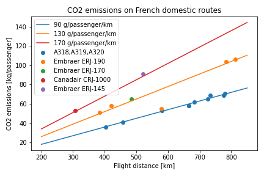
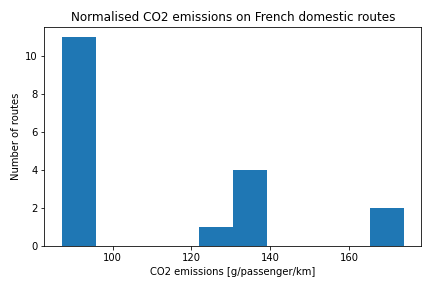

MPs in France voted last week to suspend flights on domestic routes with a direct train service of less than 2h30.
Using Air France’s own CO2 calculator I looked at the estimated emissions of some direct domestic routes. The figure below shows emissions as a function of distance. As expected, broadly speaking emissions rise as a function of distance travelled.
Normalising to consider the grams of CO2 per passenger per kilometer, we see that the data is grouped into three: flights with approximately 90, 130 and 170 g per passenger per km. Those three lines are overlaid on the data points. Using seat guru we can find out which aircraft types operate on these routes. We find that aircraft type correlates very well with normalised emissions.
This shows that flight distance is only one factor in determining CO2 emissions. Aircraft type plays just as large a role. Maybe in addition to suspending short routes we should suspend less efficient planes?
 Air France CO2 calculator accessed 2021-04-18
Seat guru accessed 2021-04-12 for routes 2021-04-12 to 2021-04-19